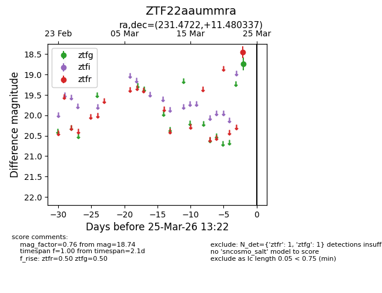
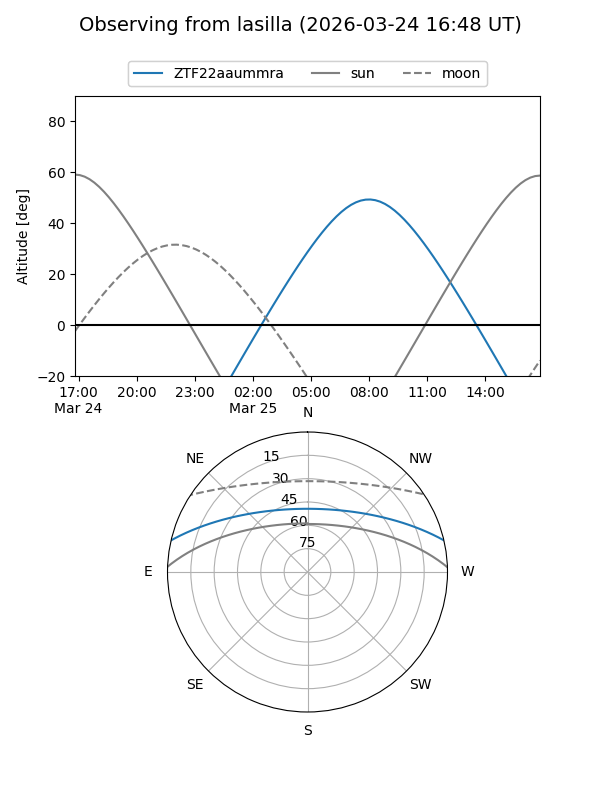
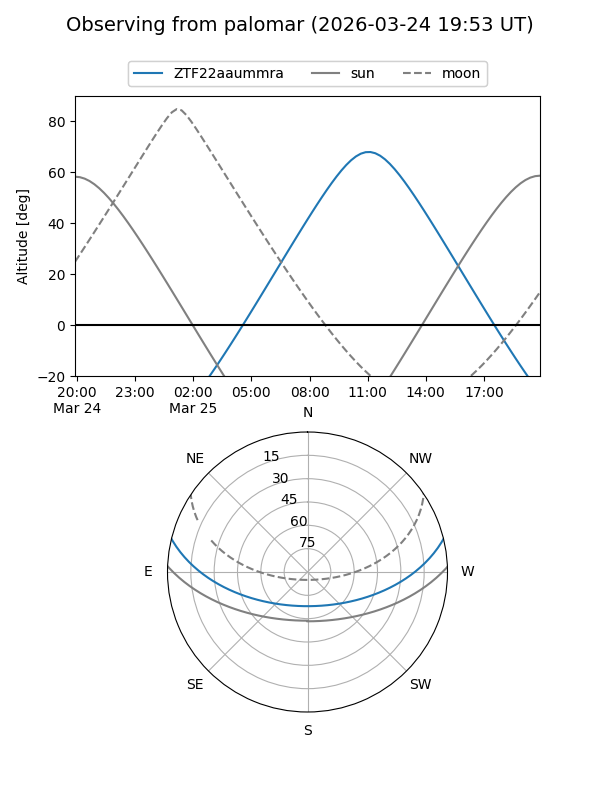

ZTF22aaummra
Target ZTF22aaummra at 2026-03-25 13:25
Aliases and brokers:
FINK: link
Lasair: link
ALeRCE: link
alt names
ZTF22aaummra (ztf,fink_ztf)
Coordinates:
equatorial (ra, dec) = 231.4722,+11.48034
equatorial (HMS+DMS) = 15:25:53.33,+11:28:49.21
galactic (l, b) = (17.2207,+50.55748)
Flags:
Photometry:
last ztfg=18.74, ztfr=18.45
1 ztfg, 1 ztfr detections
Lightcurve

Visibility


Additional plots